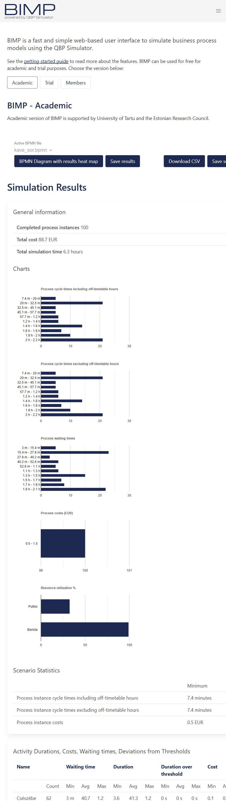

BPA · nap02 · 04 · Mentett, ellenőrzött eredmények (2026-10-05)
Kávézó-szimuláció

4. blokk – Kávézó, négy BIMP-futás
Mérés: 2026-10-05, valódi BIMP Academic futások. Minden futás 100 befejezett eset. Kezdés: hétfő 09:00; munkarend hétfő–péntek 09:00–17:00; pénznem EUR; bemelegedési kizárás 0. Az érkezés exponenciális, 6 vagy 3 perces átlaggal. Pultos: 8 EUR/óra; Barista: 9 EUR/óra. Kapu: igen 60%, nem 40%.
| Tevékenység | Erőforrás | Eloszlás | Átlag/szórás percben |
|---|---|---|---|
| Rendelés felvétele | Pultos | Normal | 1.5 / 0.4 |
| Kávé elkészítése | Barista | Normal | 3.2 / 0.8 |
| Csészébe kiöntés | Barista | Fixed | 0.6 |
| Elviteles pohárba töltés | Barista | Fixed | 0.6 |
| Fizetés | Pultos | Normal | 1 / 0.3 |
| Forgatókönyv | Átlag munkaidőben | Átlag naptári | Kihasználtság | Legnagyobb átlagos várakozás | Futás hossza |
|---|---|---|---|---|---|
| kave_01_alap | 11.3 minutes | 20.9 minutes | Pultos: 42.25%; Barista: 65.82% | Csészébe kiöntés: 2.7 m | 1.1 days |
| kave_02_csucs | 1.9 hours | 1.9 hours | Pultos: 61.76%; Barista: 96.36% | Elviteles pohárba töltés: 54.1 m | 6.7 hours |
| kave_03_ket_barista | 12.5 minutes | 12.5 minutes | Pultos: 81.16%; Barista: 60.26% | Fizetés: 2.9 m | 5.2 hours |
| kave_04_ket_pultos | 1.3 hours | 1.3 hours | Pultos: 32.55%; Barista: 99.24% | Csészébe kiöntés: 40.7 m | 6.3 hours |
Értelmezés
A barista vendégenként átlagosan 3.8 percet, a pultos 2.5 percet dolgozik. Hatperces érkezésköznél az elméleti terhelés 63.3% és 41.7%; háromperces érkezésköznél 126.7% és 83.3%. A 126.7% igény/kapacitás arány: tényleges kijelzett kihasználtság nem haladhatja meg a 100%-ot.
A csúcs alapváltozatának átlagos munkaidős átfutása 1.9 óra volt, a második baristával 12.5 perc, a második pultossal 1.3 óra. A plusz barista oldja fel a fő kapacitáshiányt; utána a pultos válik erősebben terheltté. A kétpultos változatban a barista kihasználtsága 99.24%, és a kiöntés előtt marad a nagy sor.
A 6 perces alaphelyzet 20.9 perces naptári átfutása meghaladta a 11.3 perces munkaidős átfutást, mert egy eset átnyúlt a következő munkanapra. A feladatok Duration eredményoszlopa a várakozást is tartalmazza; a külön Waiting time oszlopból olvassuk a sort.
A futások külön véletlen minták; a pontos különbségek egy-egy mérésből származnak, nem konfidenciaintervallumok. A paraméterezett BPMN-ek azonos beállításokat őriznek, ismételt futáskor más számok várhatók.
Mentés és ellenőrzés
- Négy paraméterezett modell: kave_01_alap_szimulacio.bpmn, kave_02_csucs_szimulacio.bpmn, kave_03_ket_barista_szimulacio.bpmn, kave_04_ket_pultos_szimulacio.bpmn.
- Futásonként *_bimp.txt: a megjelenített eredményoldal; *_tablak.json és *_eredmenyek.csv: a megjelenített táblák veszteségmentes másolata.
- A böngészős Save scenario letöltés időtúllépést adott. A BPMN-paramétereket helyben mentettük az official QBP sémának megfelelően, a BIMP hivatalos forráskódja alapján. A CSV a látható táblákból készült, nem a szolgáltatás natív exportja.
- A heat-map gomb nem nyitott új nézetet ebben a böngészőben. A várakozási és időtartam táblákat ellenőriztük; a feladatidők és a sor helye így rögzítve vannak.